The Mohammed Lab operates within the Cancer Early Detection Advanced Research Center
(CEDAR)
at Oregon Health and Science University's Knight Cancer Institute — dedicated to
researching new methods to detect and eliminate lethal cancers early.
Current members
Meet our team
Hisham Mohammed, PhD
Principal Investigator · Assistant Professor of Molecular and Medical Genetics, CEDAR, OHSU
Hisham is currently an Assistant Professor at the Department of Medical and Molecular Genetics at OHSU and faculty at CEDAR in the Knight Cancer Institute. He did his postdoctoral training in Professor Wolf Reik's lab at the Babraham Institute in Cambridge. In the Reik lab, he studied how the epigenome regulates establishment of fundamental lineages in the embryo using single-cell approaches. He earned his PhD at the University of Cambridge in Professor Jason Carroll's lab, where he developed Rapid Immunoprecipitation Mass Spectrometry of Endogenous Proteins (RIME). Using RIME, he uncovered novel mechanisms regulating hormone receptors in cancer.
Aysegul Ors, PhD
Assistant Staff Scientist, CEDAR
Aysegul is an Assistant Staff Scientist studying the role of transcriptional, genetic, and epigenetic heterogeneity in tumors using single-cell transcriptomic and multiomic sequencing assays. She aims to uncover the role of hormone signaling heterogeneity in tissue transformation and tumor progression in breast cancer. She joined the lab as a postdoctoral scholar, where she defined estrogen-responsive transcriptional cell states in ER+ breast cancer. Aysegul obtained her Bioengineering degree (BEng+MEng) from the University of Technology of Compiègne in France, then pursued a joint PhD in Molecular Biology and Genetics at the Institute of Advanced Biosciences in Grenoble, France, and Bilkent University in Ankara, Turkey, studying the role of histone variants in the epigenetic regulation of transcription and mitosis.
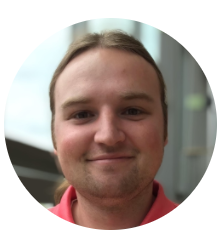
Aaron Doe, MS
Computational Biologist II, CEDAR
Aaron is a Computational Biologist working in CEDAR's Computation Hub, specializing in single-cell analysis and working with existing tools in the transcriptomic and epigenomic space. He also develops new tools for these spaces to better analyze cancer cells and uncover their underlying heterogeneity — both individually within these omics and multiomically.
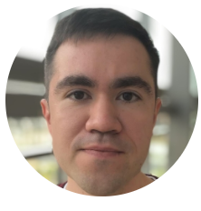
Ruslan Strogantsev, PhD
Staff Scientist, CEDAR
Ruslan is a Staff Scientist interested in understanding how the interplay between genetic and epigenetic cellular heterogeneity contributes to the progression from indolent to invasive disease in the tumor microenvironment. He joined CEDAR in April 2019 as a Specialist, focusing on developing spatially resolved single-cell technologies to study early breast cancer. He obtained his PhD at the University of Glasgow and did his postdoctoral research at the University of Cambridge.
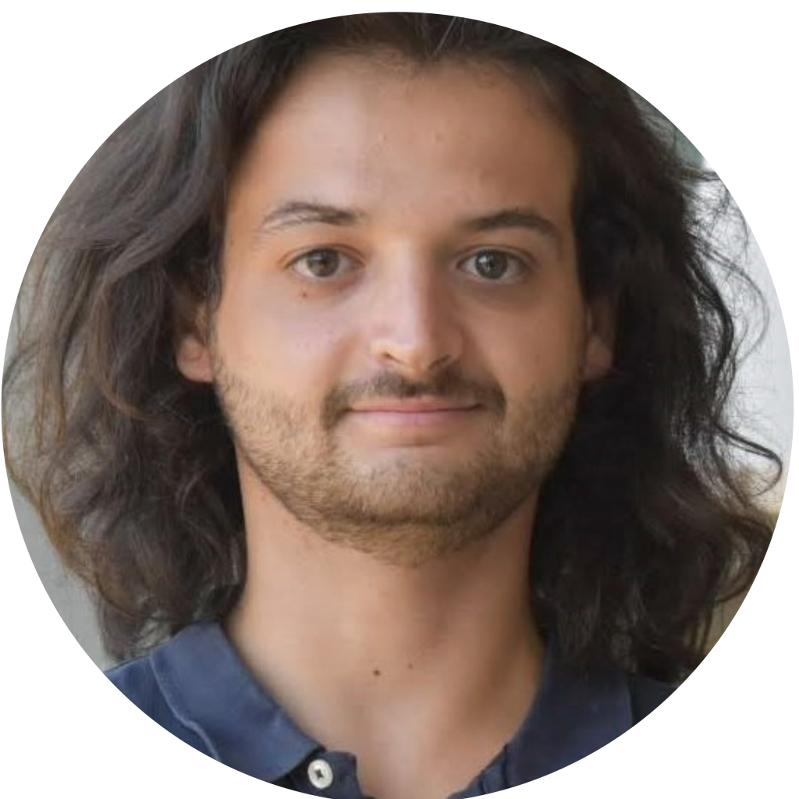
Hugo Cros, MS
Computational Biologist I, CEDAR
Hugo is a Computational Biologist working mostly with single-cell multiomics to help identify how cancer develops at single-cell resolution, and building workflows to study the data from a variety of new angles. He arrived from France, where he worked as a data scientist at SETEC, one of the country's leading engineering groups, developing artificial intelligence projects in Paris focused on deep learning and computer vision. He obtained an engineering degree from the Centrale Graduate Schools and specialized in medical biology at the Gustave Roussy Institute, a leading cancer center in Europe.
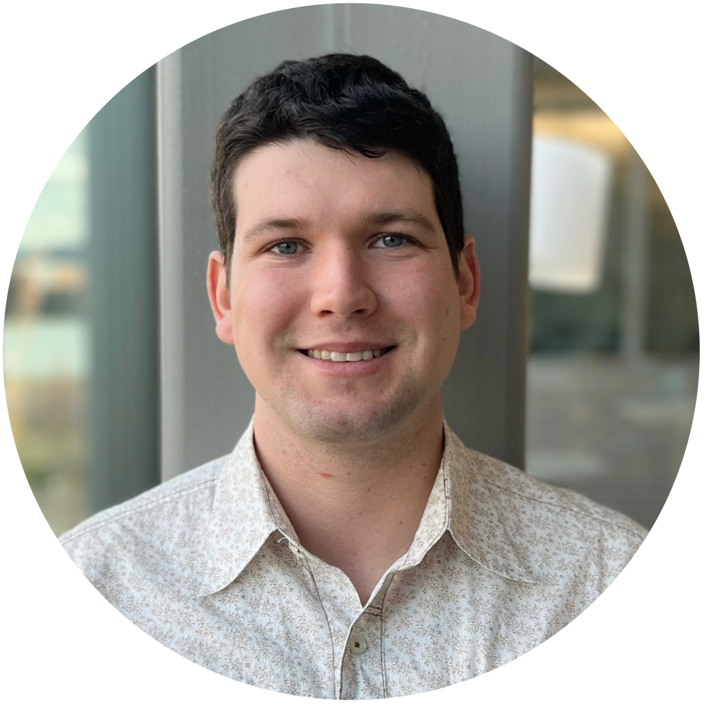
William Scott, BA
PhD Student, CEDAR, OHSU
William is a PhD candidate in the PBMS program who joined the Mohammed Lab in 2023 to study epigenetic reprogramming and cell state plasticity in luminal breast cancer using integrated wet-lab and computational approaches. He previously served as a research assistant in innate immunology at OHSU. William earned his BA in Biology from Reed College in 2019. Outside the lab, he enjoys exploring the Pacific Northwest and competing in local cyclocross races.
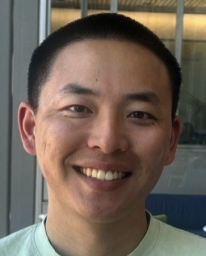
Joseph Hwang, BS
Graduate Student, PBMS, OHSU
Joseph M. Hwang is a graduate student in the Program in Biomedical Sciences (PBMS). He graduated from the University of Oregon with majors in Biology and Human Physiology and a minor in Chemistry. He is interested in learning how bioinformatical tools can be used in understanding epigenetic and transcriptional regulation.
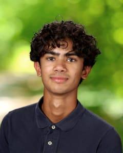
Atef Siddiqui
Intern, CEDAR
Atef is an intern in the Mohammed Lab, where he works on the lab's website and looks at RIME data. He attends Catlin Gabel School.
Alumni
Where they are now
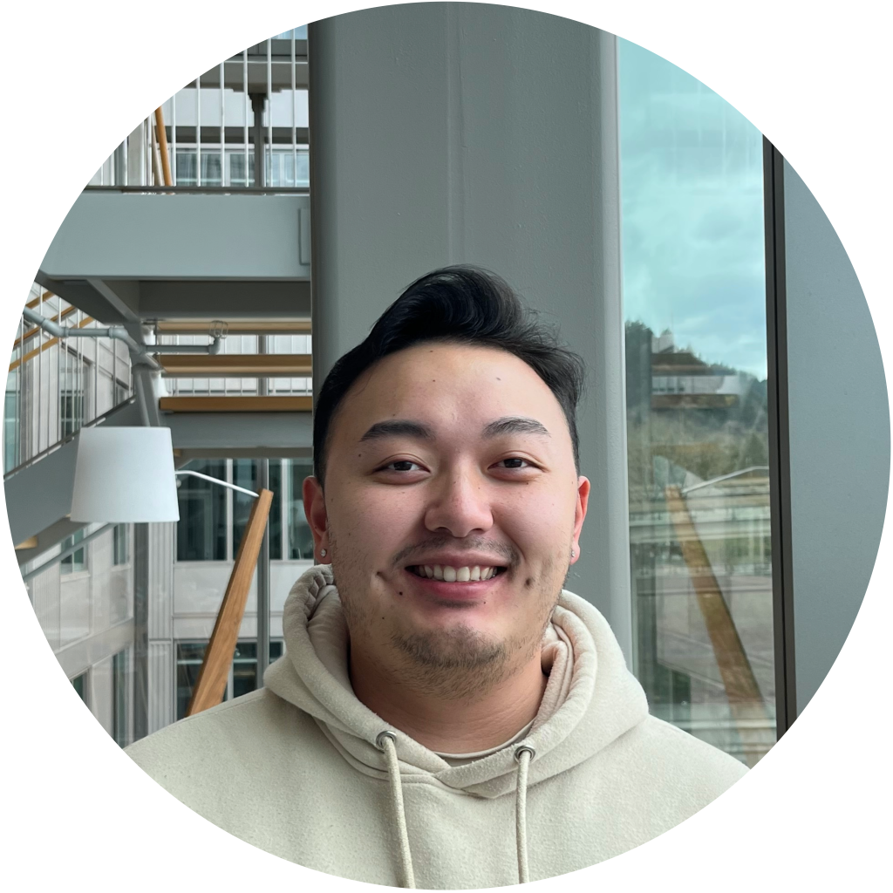
Dimitri Moua, BS
Now: Research Assistant II, CEDAR
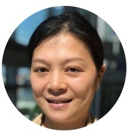
Yahong Wen, PhD
Now: Postdoctoral Scholar, CEDAR
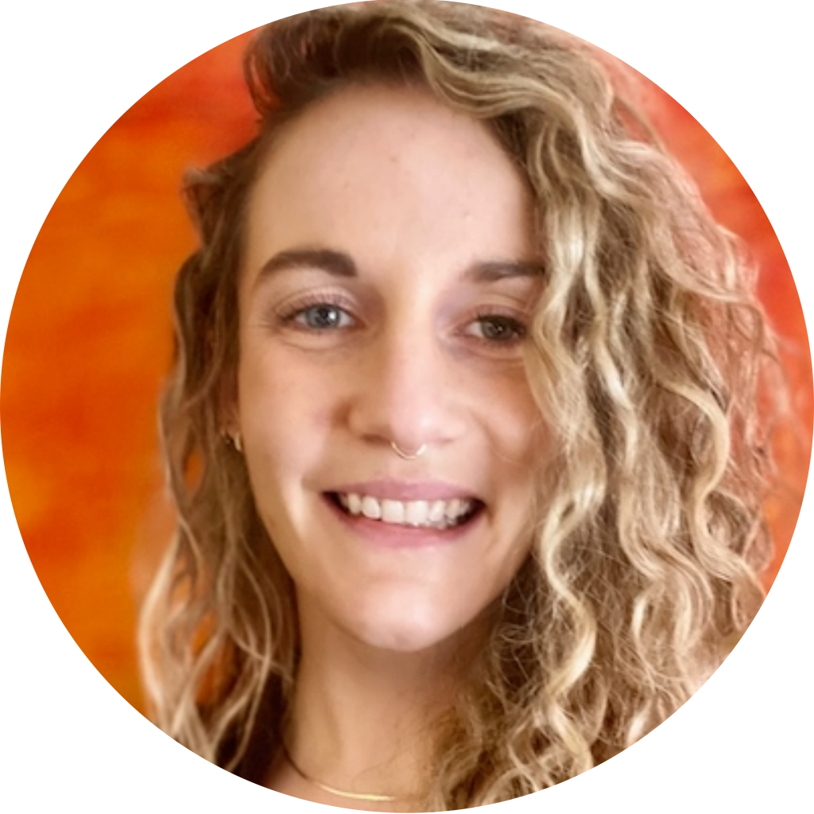
Elisabeth Goldman, PhD
Now: Computational Biologist III, CEDAR
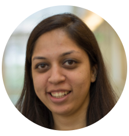
Mithila Handu, PhD
Now: Senior Research Associate, CEDAR
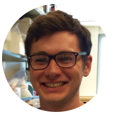
Ryan Mulqueen, PhD
Now: Postdoctoral Fellow, MD Anderson Cancer Center
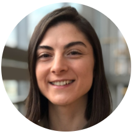
Cigdem Ak, PhD
Now: Postdoctoral Scholar, CEDAR
Arjun Jain
Now: Undergraduate, Stanford University
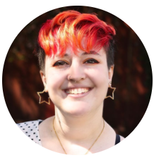
Syber Haverlack, BS
Now: Research Assistant II, Koei Chin Lab
Join the lab
We recruit at all levels — from research assistants to postdocs.